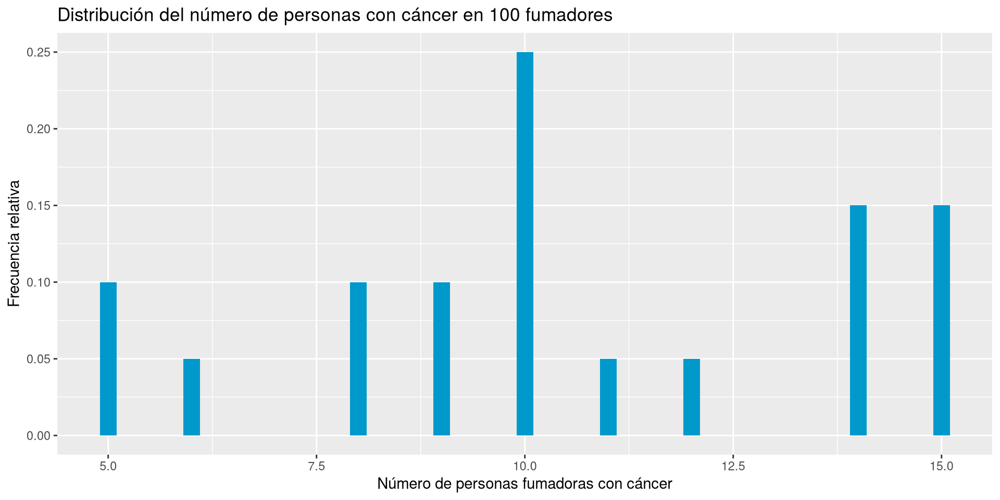
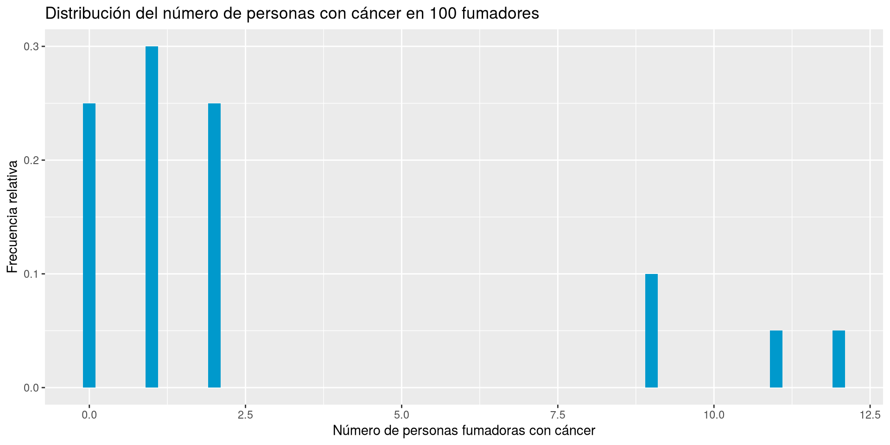
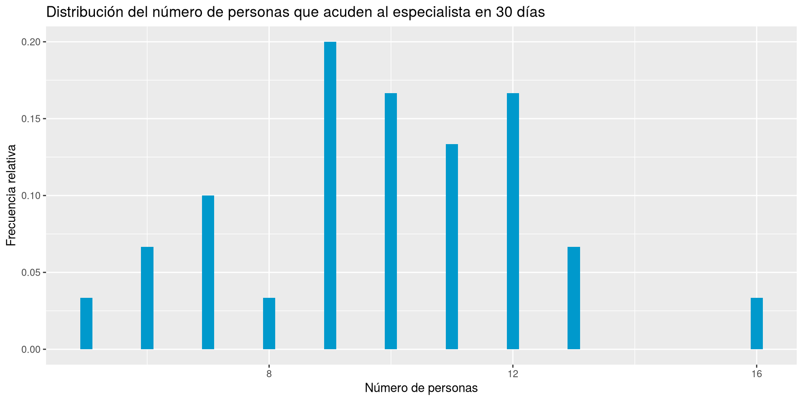

# Diagrama de barras
df |> ggplot(aes(x = hijos)) +
geom_bar(width = 0.2, fill = myblue) +
theme_minimal() +
labs(title = "Distribución de frecuencias",
x = "Número de hijos", y = "Frecuencia absoluta")Distribuciones de frecuencias

Probabilidad, frecuencias, distribuciones y simulación de muestras aleatorias.
# Diagrama de barras
df |> ggplot(aes(x = hijos)) +
geom_bar(width = 0.2, fill = myblue) +
theme_minimal() +
labs(title = "Distribución de frecuencias",
x = "Número de hijos", y = "Frecuencia absoluta")Teorema 1 (Ley de los grandes números) Cuando un experimento aleatorio se repite un gran número de veces, las frecuencias relativas de los sucesos del experimento tienden a estabilizarse en torno a cierto número, que es precisamente su probabilidad.
Lanzamiento de una moneda
Ejemplo 18 Sea una población en la que el 30% de las personas fuman, y que la incidencia del cáncer de pulmón en fumadores es del 40% mientras que en los no fumadores es del 10%.
El espacio probabilístico del experimento aleatorio que consiste en elegir una persona al azar y medir las variables Fumar y Cáncer de pulmón se muestra a continuación.

Ejemplo 19 El árbol de probabilidad asociado al experimento aleatorio que consiste en el lanzamiento de dos monedas se muestra a continuación.

Ejemplo 20 Dada una población en la que hay un 40% de hombres y un 60% de mujeres, el experimento aleatorio que consiste en tomar una muestra aleatoria de tres personas tiene el árbol de probabilidad que se muestra a continuación.

Ejemplo 30 La proporción de individuos que responden positivamente a un tratamiento puede modelarse con una distribución \(\mbox{Beta}(2, 5)\).
# Función de densidad Beta(2, 5)
df <- tibble(x = seq(0, 1, length.out = 300),
p = dbeta(x, shape1 = 2, shape2 = 5)) # Densidad de probabilidad
# Diagrama de densidad de probabilidad
ggplot(df, aes(x = x, y = p)) +
geom_area(fill = myblue, alpha = 0.5) +
geom_line(color = myblue, linewidth = 1) +
labs(title = "Distribución Beta(2, 5)",
x = "X", y = "Densidad") +
theme_minimal()
Ejemplo 32 (Ejemplo: Distribución Exponencial) Se sabe que la tasa de infecciones por un virus es de 0.2 por día. Entonces, el tiempo hasta que haya una infección sigue una distribución exponencial \(\exp(0.2)\).
# Función de densidad Exp(0.2)
df <- tibble(x = seq(0, 30, length.out = 300),
p = dexp(x, rate = 0.2)) # Densidad de probabilidad
# Diagrama de densidad de probabilidad
ggplot(df, aes(x = x, y = p)) +
geom_area(fill = myblue, alpha = 0.5) +
geom_line(color = myblue, linewidth = 1) +
labs(title = "Distribución Exponencial Exp(0.2)",
x = "Tiempo hasta la infección", y = "Densidad") +
theme_minimal()
Pero para tamaños muestrales grandes, la distribución de frecuencias del muestreo se aproxima a la distribución de probabilidad del modelo binomial \(B(10, 0.2)\).
df <- tibble(x = rbinom(n = 10000, size = n, prob = p))
# Distribución binomial teórica
df_binom <- tibble(x = 0:n, p = dbinom(0:n, size = n, prob = p))
ggplot(df, aes(x = x)) +
# Diagrama de barras de la distribución muestral
geom_bar(aes(y = after_stat(count / sum(count))), fill = myblue, width = 0.2) +
# Distribución de probabilidad del modelo binomial
geom_point(data = df_binom, aes(x = x, y = p), color = myred, size = 2) +
scale_x_continuous(breaks = 0:n) +
labs(title = "Muestreo aleatorio simple de B(10, 0.2)",
x = "Número de fumadores", y = "Frecuencia relativa / Probabilidad") +
theme_minimal()
Ejemplo 36 Se sabe que la probabilidad de que un paciente responda favorablemente a un tratamiento es del 30%. Vamos a realizar un muestreo aleatorio simple de tamaño 20 del número de pacientes tratados hasta obtener el primer éxito.
set.seed(123) # Para reproducibilidad
p <- 0.3 # Probabilidad de éxito
# Muestreo aleatorio simple de la distribución geométrica
df <- tibble(x = rgeom(n = 20, prob = p))
# Distribución geométrica teórica
x_max <- max(df$x)
df_geom <- tibble(x = 0:x_max, p = dgeom(0:x_max, prob = p))
ggplot(df, aes(x = x)) +
# Diagrama de barras de la distribución muestral
geom_bar(aes(y = after_stat(count / sum(count))), fill = myblue, width = 0.2) +
# Distribución de probabilidad del modelo geométrico
geom_point(data = df_geom, aes(x = x, y = p), color = myred, size = 2) +
scale_x_continuous(breaks = 0:x_max) +
labs(title = "Muestreo aleatorio simple de G(0.3)",
x = "Número de fracasos antes del primer éxito", y = "Frecuencia relativa / Probabilidad") +
theme_minimal()
Para tamaños muestrales pequeños, la distribución de frecuencias muestral es muy diferente a la distribución de probabilidad del modelo Geométrico \(G(0.3)\)
Pero para tamaños muestrales grandes, la distribución de frecuencias del muestreo se aproxima a la distribución de probabilidad del modelo Geométrico \(G(0.3)\).
df <- tibble(x = rgeom(n = 10000, prob = p))
x_max <- max(df$x)
df_geom <- tibble(x = 0:x_max, p = dgeom(0:x_max, prob = p))
ggplot(df, aes(x = x)) +
# Diagrama de barras de la distribución muestral
geom_bar(aes(y = after_stat(count / sum(count))), fill = myblue, width = 0.2) +
# Distribución de probabilidad del modelo geométrico
geom_point(data = df_geom, aes(x = x, y = p), color = myred, size = 2) +
scale_x_continuous(breaks = 0:x_max) +
labs(title = "Muestreo aleatorio simple de G(0.3)",
x = "Número de fracasos antes del primer éxito", y = "Frecuencia relativa / Probabilidad") +
theme_minimal()
Ejemplo 37 El número medio de infartos que se producen diariamente en una ciudad es 5. Vamos a realizar un muestreo aleatorio simple de tamaño 10 del número de infartos diarios en esta ciudad.
set.seed(123)
lambda <- 5 # Media
df <- tibble(x = rpois(n = 10, lambda = lambda))
x_max <- max(df$x)
df_pois <- tibble(x = 0:x_max, p = dpois(0:x_max, lambda = lambda))
ggplot(df, aes(x = x)) +
# Diagrama de barras de la distribución muestral
geom_bar(aes(y = after_stat(count / sum(count))), fill = myblue, width = 0.2) +
# Distribución de probabilidad del modelo de Poisson
geom_point(data = df_pois, aes(x = x, y = p), color = myred, size = 2) +
scale_x_continuous(breaks = 0:x_max) +
labs(title = "Muestreo aleatorio simple de P(5)",
x = "Número de infartos", y = "Frecuencia relativa / Probabilidad") +
theme_minimal()
Para tamaños muestrales pequeños, la distribución de frecuencias muestral es muy diferente a la distribución de probabilidad del modelo de Poisson \(P(5)\)
set.seed(123)
tibble(x = rbinom(n = 20, size = 100, prob = 0.1)) |>
ggplot(aes(x = x, y = after_stat(prop))) +
stat_count(fill = myblue, width = 0.2) +
labs(title = "Distribución del número de personas con cáncer en 100 fumadores",
x = "Número de personas fumadoras con cáncer", y = "Frecuencia relativa")
tibble(x = rbinom(n = 20, size = 100, prob = 0.01)) |>
ggplot(aes(x = x, y = after_stat(prop))) +
stat_count(fill = myblue, width = 0.2) +
labs(title = "Distribución del número de personas con cáncer en 100 no fumadores",
x = "Número de personas no fumadoras con cáncer", y = "Frecuencia relativa")
tibble(p = sample(c(0.1, 0.01), size = 20, prob = c(0.3, 0.7), replace = TRUE)) |> # Probabilidad de cáncer según fumador o no fumador
mutate(x = rbinom(n = n(), size = 100, prob = p)) |>
ggplot(aes(x = x, y = after_stat(prop))) +
stat_count(fill = myblue, width = 0.2) +
labs(title = "Distribución del número de personas con cáncer en 100 fumadores",
x = "Número de personas fumadoras con cáncer", y = "Frecuencia relativa")
tibble(p = sample(c(0.1, 0.01), size = 10000, prob = c(0.3, 0.7), replace = TRUE)) |> # Probabilidad de cáncer según fumador o no fumador
mutate(x = rbinom(n = n(), size = 100, prob = p)) |>
ggplot(aes(x = x, y = after_stat(prop))) +
stat_count(fill = myblue, width = 0.2) +
labs(title = "Distribución del número de personas con cáncer en 100 fumadores",
x = "Número de personas fumadoras con cáncer", y = "Frecuencia relativa")
Pero para tamaños muestrales grandes, la distribución de frecuencias del muestreo se aproxima a la distribución de probabilidad del modelo uniforme continuo \(U(0, 20)\).
df <- tibble(x = runif(n = 10000, min = min, max = max))
ggplot(df, aes(x = x)) +
# Diagrama de densidad de probabilidad de la muestra
geom_area(stat = "density", fill = myblue, alpha = 0.5, bounds = c(0, 20)) +
geom_line(stat = "density", color = myblue, linewidth = 1, bounds = c(0, 20)) +
geom_hline(yintercept = 1/20, color = myred, linewidth = 1) +
labs(title = "Muestreo aleatorio simple de U(0, 20)",
x = "Tiempo de espera", y = "Densidad") +
theme_minimal()
Ejemplo 39 La proporción de individuos que responden positivamente a un tratamiento puede modelarse con una distribución \(\mbox{Beta}(2, 5)\). Vamos a realizar un muestreo aleatorio simple de tamaño 10 de esta distribución.
set.seed(123)
n <- 10 # Tamaño de la muestra
shape1 <- 2 # Parámetro de forma α
shape2 <- 5 # Parámetro de forma β
# Muestreo aleatorio simple de la distribución beta
df <- tibble(x = rbeta(n = n, shape1 = shape1, shape2 = shape2))
# Distribución beta teórica
df_beta <- tibble(x = seq(0, 1, length.out = 300),
p = dbeta(x, shape1 = shape1, shape2 = shape2))
ggplot(df, aes(x = x)) +
# Diagrama de densidad de probabilidad de la muestra
geom_area(stat = "density", fill = myblue, alpha = 0.5) +
geom_line(stat = "density", color = myblue, linewidth = 1) +
# Distribución de probabilidad del modelo beta
geom_line(data = df_beta, aes(x = x, y = p), color = myred, linewidth = 1) +
labs(title = "Muestreo aleatorio simple de Beta(2, 5)",
x = "Proporción de respuestas positivas", y = "Densidad") +
theme_minimal()
Para tamaños muestrales pequeños, la distribución de frecuencias muestral es muy diferente a la distribución de probabilidad del modelo beta \(Beta(2, 5)\).
Pero para tamaños muestrales grandes, la distribución de frecuencias del muestreo se aproxima a la distribución de probabilidad del modelo beta \(Beta(2, 5)\).
set.seed(123)
n <- 10000 # Tamaño de la muestra
shape1 <- 2 # Parámetro de forma α
shape2 <- 5 # Parámetro de forma β
# Muestreo aleatorio simple de la distribución beta
df <- tibble(x = rbeta(n = n, shape1 = shape1, shape2 = shape2))
# Distribución beta teórica
df_beta <- tibble(x = seq(0, 1, length.out = 300),
p = dbeta(x, shape1 = shape1, shape2 = shape2))
ggplot(df, aes(x = x)) +
# Diagrama de densidad de probabilidad de la muestra
geom_area(stat = "density", fill = myblue, alpha = 0.5) +
geom_line(stat = "density", color = myblue, linewidth = 1) +
# Distribución de probabilidad del modelo beta
geom_line(data = df_beta, aes(x = x, y = p), color = myred, linewidth = 1) +
labs(title = "Muestreo aleatorio simple de Beta(2, 5)",
x = "Proporción de respuestas positivas", y = "Densidad") +
theme_minimal()
Ejemplo 40 La estatura de personas adultas en una población suele seguir una distribución normal \(N(170, 8)\) (en cm). Vamos a realizar un muestreo aleatorio simple de tamaño 10 de esta distribución.
set.seed(123)
n <- 10 # Tamaño de la muestra
mean <- 170 # Media μ
sd <- 8 # Desviación típica σ
# Muestreo aleatorio simple de la distribución normal
df <- tibble(x = rnorm(n = n, mean = mean, sd = sd
))
# Distribución normal teórica
df_norm <- tibble(x = seq(140, 200, length.out = 300
), p = dnorm(x, mean = mean, sd = sd))
ggplot(df, aes(x = x)) +
# Diagrama de densidad de probabilidad de la muestra
geom_area(stat = "density", fill = myblue, alpha = 0.5
) +
geom_line(stat = "density", color = myblue, linewidth = 1
) +
# Distribución de probabilidad del modelo normal
geom_line(data = df_norm, aes(x = x, y = p), color = myred, linewidth = 1
) +
scale_x_continuous(breaks = seq(140, 200, by = 10)) +
labs(title = "Muestreo aleatorio simple de N(170, 8)",
x = "Estatura", y = "Densidad") +
theme_minimal()
Para tamaños muestrales pequeños, la distribución de frecuencias muestral es muy diferente a la distribución de probabilidad del modelo normal \(N(170, 8)\).
Pero para tamaños muestrales grandes, la distribución de frecuencias del muestreo se aproxima a la distribución de probabilidad del modelo exponencial \(Exp(0.2)\).
set.seed(123)
n <- 10000 # Tamaño de la muestra
rate <- 0.2 # Tasa de ocurrencia λ
# Muestreo aleatorio simple de la distribución exponencial
df <- tibble(x = rexp(n = n, rate = rate))
# Distribución exponencial teórica
x_max <- qexp(0.999, rate = rate)
df_exp <- tibble(x = seq(0, x_max, length.out = 300), p = dexp(x, rate = rate))
ggplot(df, aes(x = x)) +
# Diagrama de densidad de probabilidad de la muestra
geom_area(stat = "density", fill = myblue, alpha = 0.5, bounds = c(0, x_max)) +
geom_line(stat = "density", color = myblue, linewidth = 1, bounds = c(0, x_max)) +
# Diagrama de densidad teórica
geom_line(data = df_exp, aes(x = x, y = p), color = myred, linewidth = 1
) +
labs(title = "Muestreo aleatorio simple de Exp(0.2)",
x = "Tiempo hasta la infección", y = "Densidad") +
theme_minimal()
Ejemplo 42 El tiempo hasta el tercer contagio de un virus, si los contagios ocurren a una tasa de 2 por hora, sigue una distribución \(\mbox{Gamma}(3, 2)\). Vamos a realizar un muestreo aleatorio simple de tamaño 10 de dicha distribución.
set.seed(123)
n <- 10 # Tamaño de la muestra
shape <- 3 # Parámetro de forma α
rate <- 2 # Parámetro de tasa β
# Muestreo aleatorio simple de la distribución gamma
df <- tibble(x = rgamma(n = n, shape
, rate = rate))
# Distribución gamma teórica
x_max <- qgamma(0.999, shape = shape, rate = rate)
df_gamma <- tibble(x = seq(0, x_max, length.out = 300
), p = dgamma(x, shape = shape, rate = rate))
ggplot(df, aes(x = x)) +
# Diagrama de densidad de probabilidad de la muestra
geom_area(stat = "density", fill = myblue, alpha = 0.5
) +
geom_line(stat = "density", color = myblue, linewidth = 1
) +
# Diagrama de densidad teórica
geom_line(data = df_gamma, aes(x = x, y = p), color = myred, linewidth = 1
) +
labs(title = "Muestreo aleatorio simple de Gamma(3, 2)",
x = "Tiempo hasta el tercer contagio", y = "Densidad") +
theme_minimal()
Para tamaños muestrales pequeños, la distribución de frecuencias muestra es muy diferente a la distribución de probabilidad del modelo gamma \(\mbox{Gamma}(3, 2)\).
set.seed(123)
lambda <- 10
tibble(x = rpois(n = 30, lambda = lambda)) |>
ggplot(aes(x = x, y = after_stat(prop))) +
stat_count(fill = myblue, width = 0.2) +
labs(title = "Distribución del número de personas que acuden al especialista en 30 días con tasa de 10",
x = "Número de personas", y = "Frecuencia relativa")
tibble(lambda = rnorm(n = 30, mean = 10, sd = 2)) |>
mutate(x = rpois(n = n(), lambda = lambda)) |>
ggplot(aes(x = x, y = after_stat(prop))) +
stat_count(fill = myblue, width = 0.2) +
labs(title = "Distribución del número de personas que acuden al especialista en 30 días",
x = "Número de personas", y = "Frecuencia relativa")
set.seed(123)
lambda <- 10
tibble(x = rpois(n = 10000, lambda = lambda)) |>
ggplot(aes(x = x, y = after_stat(prop))) +
stat_count(fill = myblue, width = 0.2) +
labs(title = "Distribución del número de personas que acuden al especialista en 10000 días con tasa de 10",
x = "Número de personas", y = "Frecuencia relativa")
tibble(lambda = rnorm(n = 10000, mean = 10, sd = 2)) |>
mutate(x = rpois(n = n(), lambda = lambda)) |>
ggplot(aes(x = x, y = after_stat(prop))) +
stat_count(fill = myblue, width = 0.2) +
labs(title = "Distribución del número de personas que acuden al especialista en 10000 días",
x = "Número de personas", y = "Frecuencia relativa")


{kind=link}